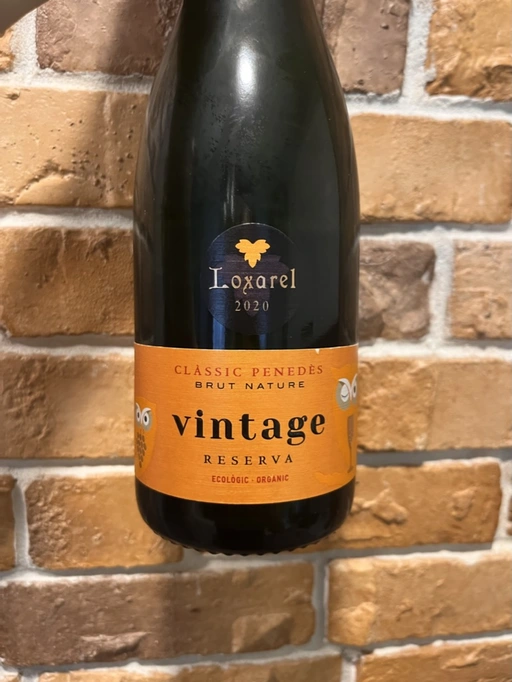
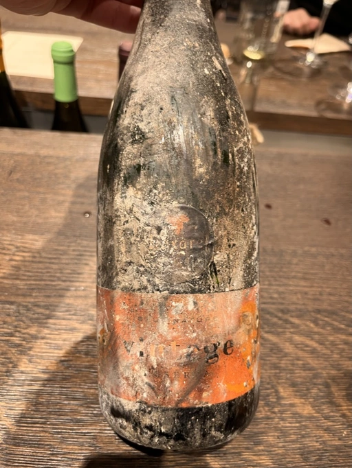
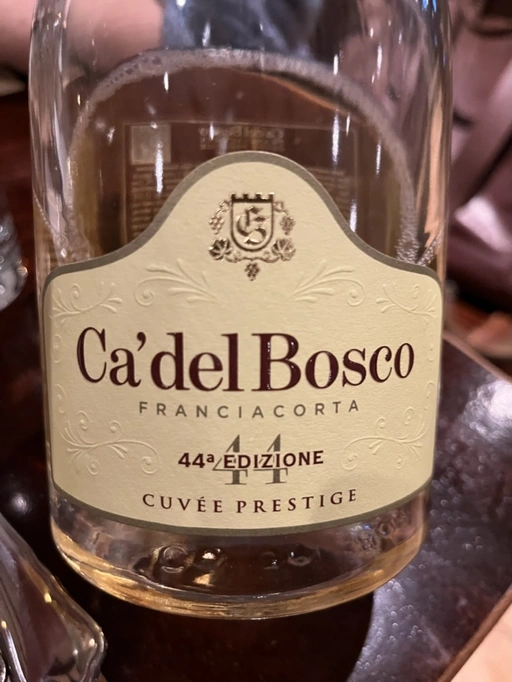
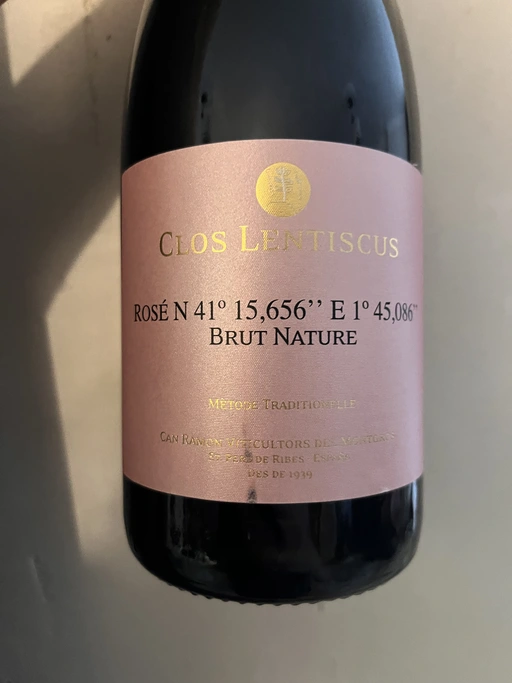
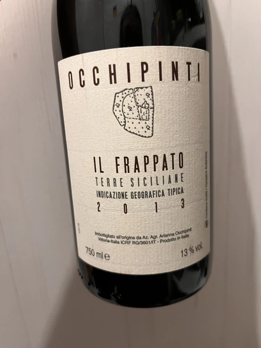
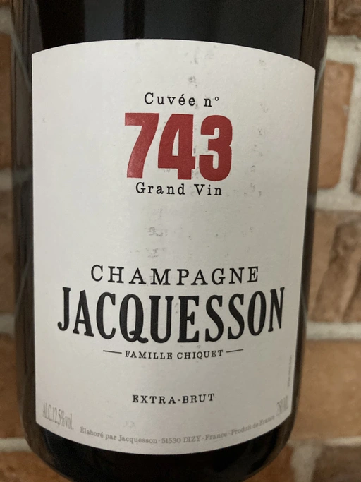

- Type
- White Sparkling, Brut nature
- Producer
- Loxarel
- Vintage
- 2020
- Disgorged in
- October 2022
- Location
- Spain, Penedès DO
- Grapes
- Xarel-lo, Macabeo, Chardonnay
- Alcohol
- 13
- Sugar
- NA
- Price
- 480 UAH, 484 UAH
- Cellar
- N/A
Ratings
2022-11-21 - 7.50
Not sure if it’s a new vintage, but I liked those survived bottles more. 2020 offers less volume and less complexity. Typical Cava (oops, I mean Clàssic Penedès), yet a good one.
2022-12-17 - 7.50
Really nice bubbles. Friendly and enjoyable with the right volume, freshness and balance. Brioche, butter, white flowers, baked apples and citrus. Lovely.
Related

Loxarel
Clàssic Penedès Brut Nature Reserva - 2019

Loxarel
Refugi Brut Nature Reserva - 2018

Ca' del Bosco
Franciacorta 44a Edizione Cuvée Prestige - NV

Clos Lentiscus
Rosé N 41° 15,656'' E 1° 45,086'' Brut Nature - 2017

Arianna Occhipinti
Il Frappato - 2013

Jacquesson
Cuvee 743 Grand Vin (2015) - NV